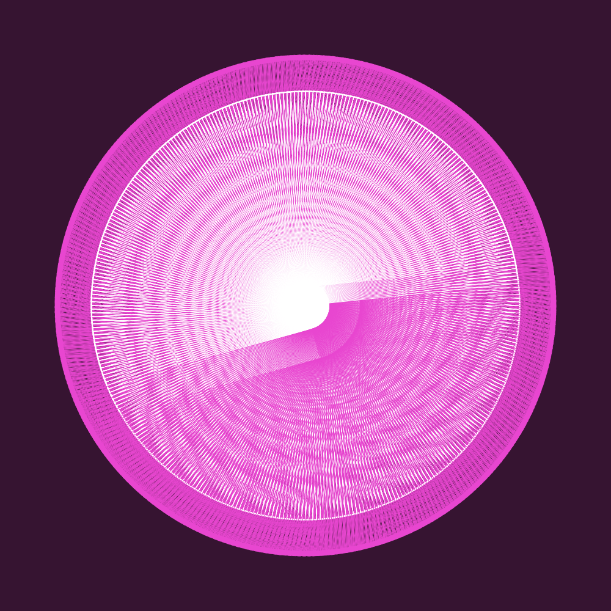

Day 4: Attempt at making a quick puzzle. Try to center the middle circle to make an "O".
Day 5: First exploration with WEBGL and 3D forms.
Day 6: Exploring rotation and 3D forms.
Day 7: Incorporating sliders to change colour as you slide from left to right.

Day 8: Inspired by the movement of clock hands.
Day 9: Exploration with colour quadrants.
Day 10: Experimentation with colour randomization.
Day 11: Swirling tunnel.
Day 12: Inspired by submarine echolocation.
Day 13: Rotation of 2D shapes to create the illusion of 3D forms.
Day 14: Inspired by spider-webs.
Day 15: Using smaller shapes to create larger ones.
Day 16: Exploration with particles and movement.
Day 17: Responsive to audio.
Day 18: Randomization, inspired by bubbles.
Day 19: Attempted to mimic the movement of a whale/dolphin chasing a swarm of fish.
Day 20: Attempted to recreate the blooming of a flower bud.
Day 21: Attempted an illusion of a paper cut-out.
Objective
For this assignment, you are tasked with developing a daily practice of "code sketches." Rather than constructing a single project, your goal is to allot daily time to exploring generative art. With your assigned letter as your inspiration, create 21 code "sketches" of that letter in p5 over the course of 3 weeks.
Learning Objectives
Develop their knowledge of fundamental programming concepts
Explore new and non-traditional ways of making beyond the parameters of existing design software
Refine formal approach through experimentation and iteration
Learn how a generative approach can aid in future meaning-making
Embrace happy 'mistakes': unexpected results
Develop a daily practice of learning through making
Prior to this course I had no experience with coding, so when I found out that I was going to use coding for this assignment, I was quite nervous and didn't know what to expect. However, after going through the tutorials in class I was able to learn about the fundamentals of coding to produce work that I never thought I would be able to do. By following class examples and exploring the p5 reference sheet to discover new methods of coding, I was able to combine multiple codes to produce eye-catching pieces of generative art. There were also a few times where I would make mistakes in my code, but most of the time I kept my mistakes because it was more of a successful fail. Throughout the duration of my daily sketches I found myself appreciating and embracing the happy accidents rather than getting frustrated over them.
Moreover, through this assignment I acknowledged how important it is to pay attention to details; one tiny mistake and it could ruin your entire code. This helped me develop a stronger sense of concentration and attention to every minute detail. By closely scanning through my code, I was able to figure out mistakes and errors and correct them accordingly.
Although coding is quite the challenge, I’m glad that I was able to step outside of my comfort zone to learn something new. In the beginning I was quite annoyed with many concepts because they were all things that I have never done before. However, after practicing daily I began to familiarize myself with many of the concepts, and thus sketching became much easier and more enjoyable to do.